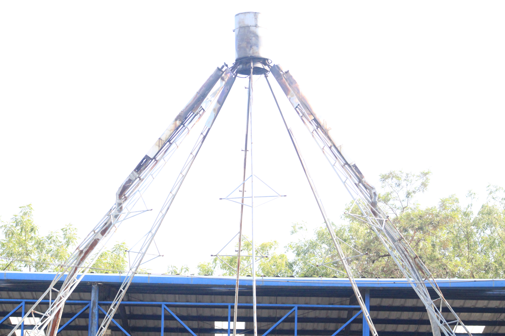

Hangar Boeing UDB
Laboratorios aeronáuticos con tecnología y aeronaves reales que fortalecen la formación práctica de una de las carreras más destacadas de la universidad.
Contenido
Los Laboratorios de Aeronáutica de la Universidad Don Bosco impulsan la formación académica y práctica de la carrera de ingeniería aeronáutica, una de las más destacadas de la institución. Estos espacios han sido desarrollados progresivamente para responder a la necesidad de una preparación técnica especializada. Cuentan con equipos avanzados y aeronaves como el Boeing 737, una avioneta Cessna y simuladores de cabina en el campus. Además, incluyen el avión escuela Boeing 727, donado por FedEx Express, ubicado en la Base Aérea de Ilopango.
Galería

Información General
| Boeing 737 | Avión de gran tamaño donado por FedEx Express. |
|---|---|
| Avioneta CESSNA | Avión usado para las prácticas de TMA y la ingeniería. |
| Equipos de cabina | Equipos usados para las prácticas de los estudiantes. |
Características
- Avión Boeing 737
- Avioneta CESSNA
- Equipos de aviación